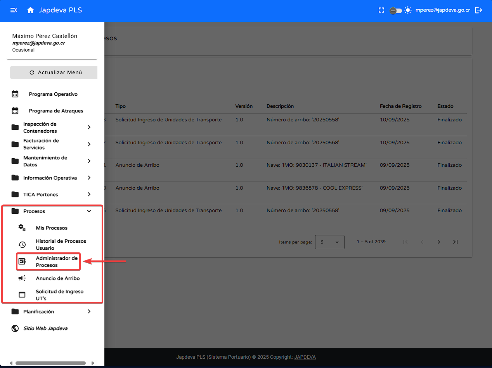
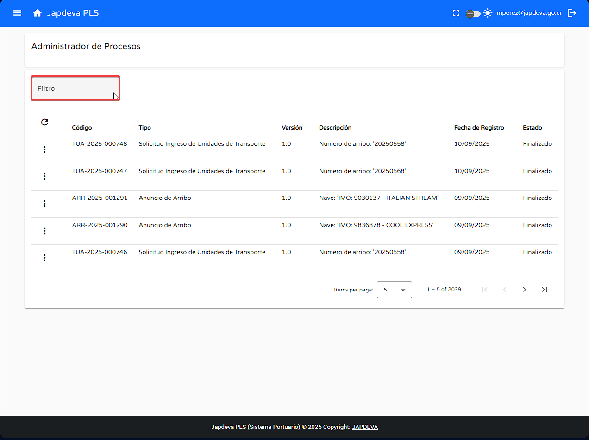
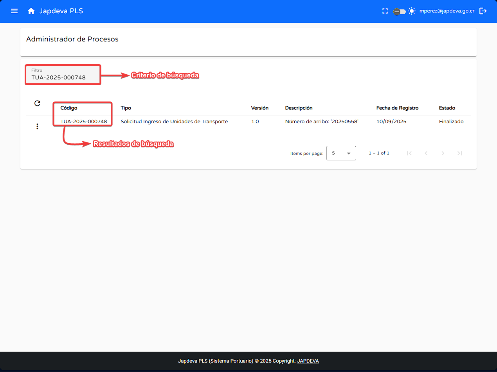
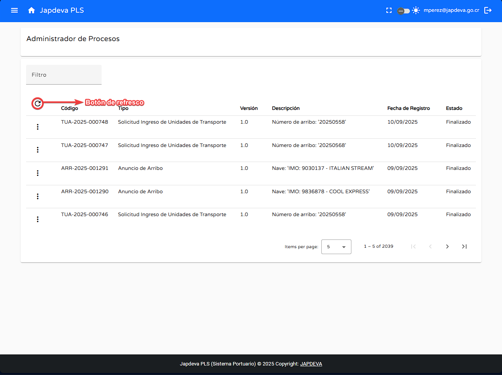
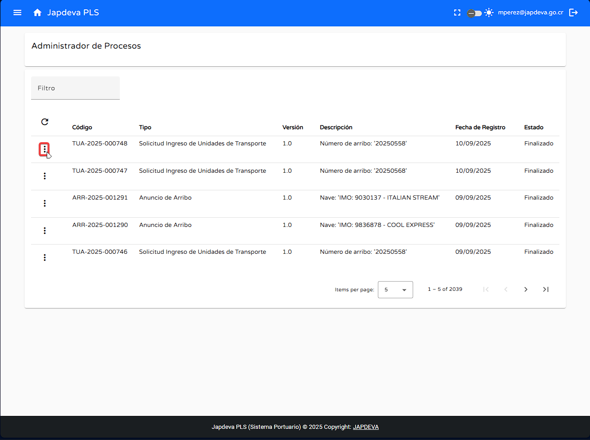
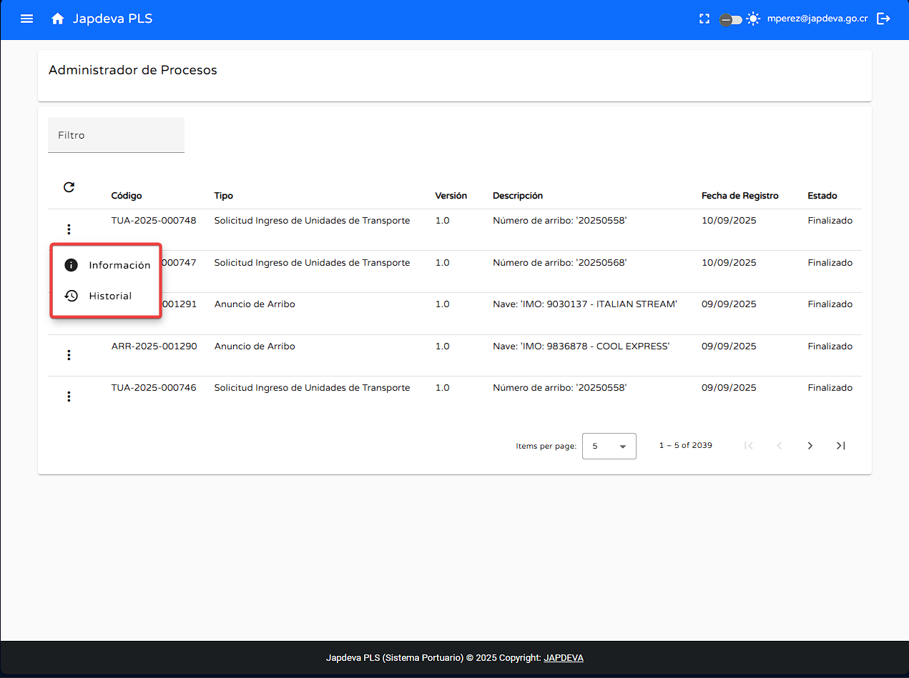
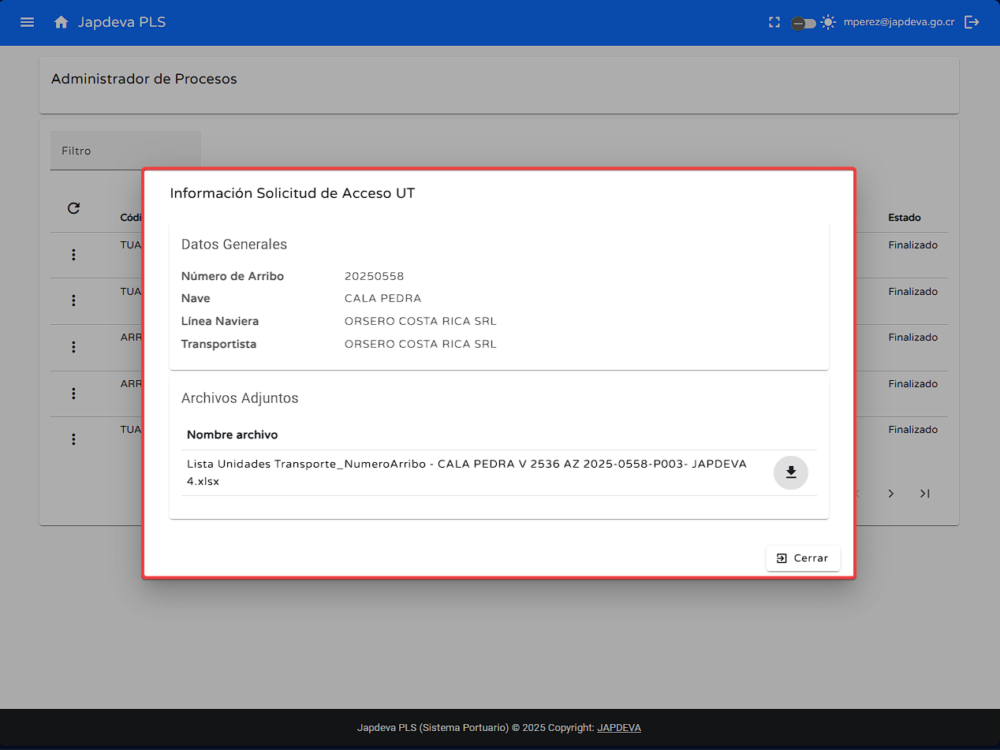
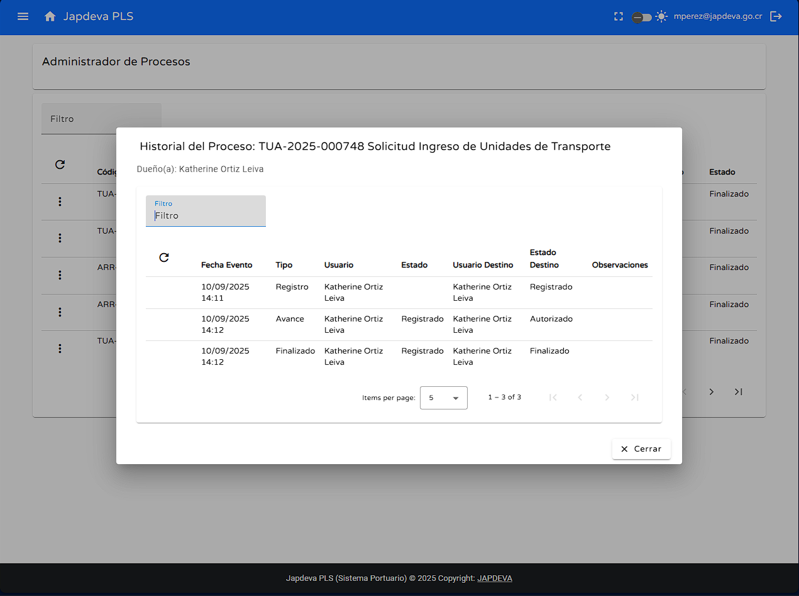
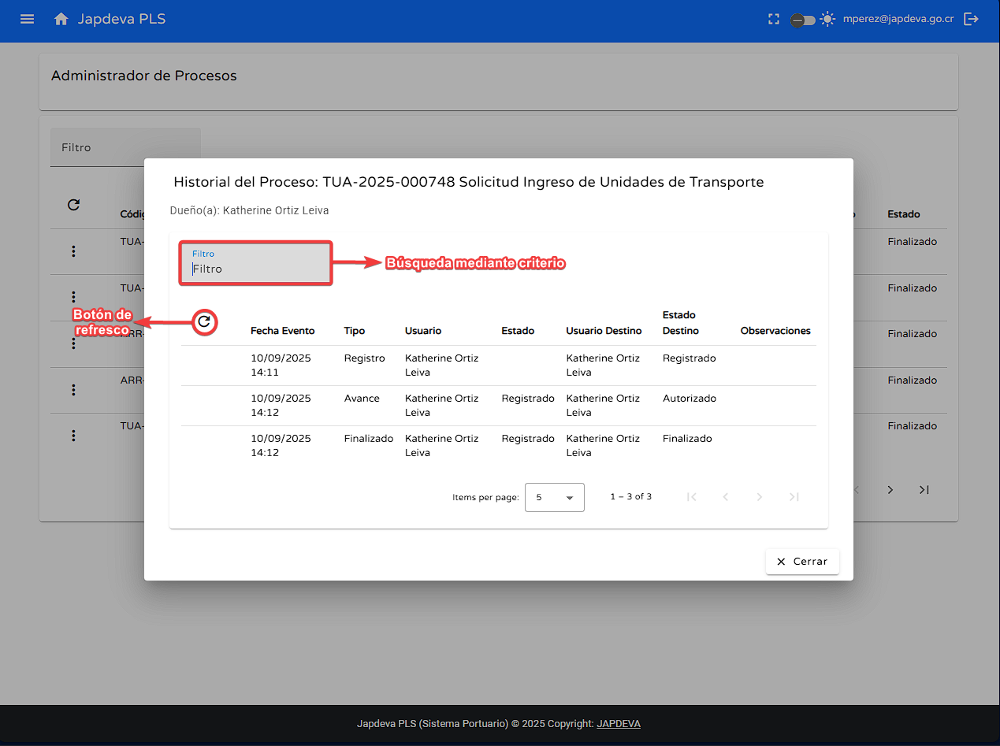
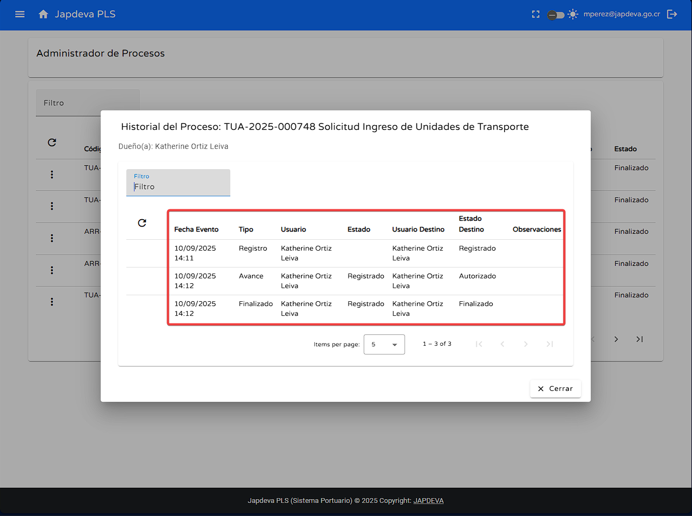

Bienvenido a la guía de usuario para la pantalla Administrador de Procesos del sistema PLS.
Esta guía está diseñada para ayudarte a utilizar y comprender de forma sencilla y directa las
funcionalidades que ofrece esta pantalla.
1. Introducción
Ubicada dentro del submenú Procesos, esta pantalla ofrece como función principal el visualizar todos los
procesos realizados
por los usuarios en el sistema. Además de brindar funciones de búsqueda, refresco y opciones extra
relacionadas a cada uno de los procesos.

Consejo: Esta guía está diseñada para ser leída en orden, pero puedes saltar a las
secciones que necesites usando el menú de contenido.
2. Funciones principales
1
Búsqueda mediante filtro
Para realizar está función de manera correcta es necesario hacer los siguientes pasos:
Posicionar el cursor sobre el espacio en blanco ubicado en la parte superior izquierda de la
pantalla.

Se deben de ingresar los criterios de búsqueda deseados, donde si existen datos que coincidan con
estos se
mostrarán automáticamente en pantalla.

2
Función refresco de información
Para realizar de manera correcta esta función se deben seguir estos pasos:
Posicionar el cursor sobre el botón de refresco de información y dar clic sobre él.

Sí existen datos nuevos se reflejarán de manera automática en la tabla presente en
pantalla al moento de dar clic en el botón.
3
Función información detallada
Para visualizar esta información detallada de un proceso se debe seguir estos pasos:
Posicionar el cursor sobre el botón de Opciones que se encuentra al lado izquierdo de cada
una de
las filas existentes en la tabla.

Al momento de dar clic se desplegará una pequeña ventana con dos opciones: Información e
Historial.

La opción que nos interesa es la de Información por ende daremos clic en ella.
Como se observa en la siguiente imagen la opción de Información brinda una vista más
detallada
sobre el proceso adjuntando datos generales y archivos adjuntos del mismo.

4
Función historial
Aparte de la opción de Información la ventana de opciones también brinda la oportunidad de
visualizar el Historial de un proceso seleccionado.
Al momento de dar clic en la opción se desplegará una ventana que contiene tanto información
relacionada al proceso seleccionado como acciones que se pueden realizar sobre la información
misma.

Como se puede observar en la imagen anterior está ventana posee funcionalidades internas tales como:
Búsqueda mediante filtro y actualización de información. Donde su funcionamiento es igual a lo
explicado en esta guía.

Por último, dentro de está pantalla se pueden observar campos relacionados al proceso los cuales
serán explicados a continuación.
Fecha evento: La fecha y hora exacta en la que se realizó la acción en el
sistema.
Tipo: Tipo de evento relacionado con el proceso.
Usuario: Usuario que realizó la acción.
Estado: Estado del proceso en el momento de realizar la acción.
Usuario Destino: A quién va dirigido el proceso.
Estado destino: Estado del proceso al momento de recibirlo el destinatario.
Observaciones: Observaciones adicionales sobre el proceso.

5
Visualización de información en pantalla Administrador de Procesos
Para brindar una visión general sobre los campos que componen la tabla presente en pantalla se procederá
a explicar de manera detallada cada uno de los mismos a continuación.
Código: Identificador único del proceso en el sistema.
Tipo: Tipo de proceso realizado por los usuarios en el sitema. Ejemplo: Solicitud
de ingreso o anuncio de arribo.
Descripción: Descripción del proceso, generalmente usada para indicar el número de
arribo o información relacionada a la nave que está solicitando las acciones del proceso.
Fecha de registro: Fecha en que se registró el proceso en el sistema.